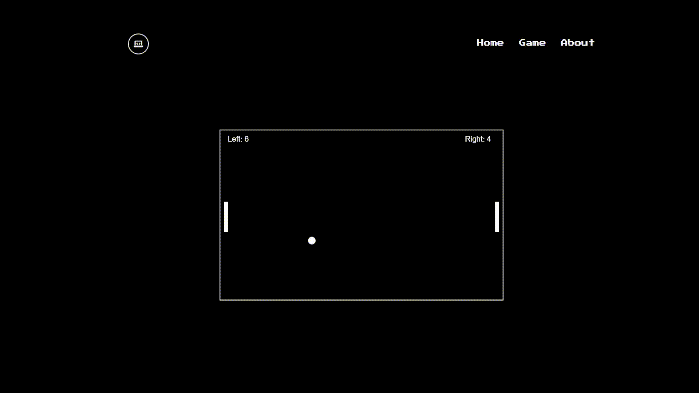
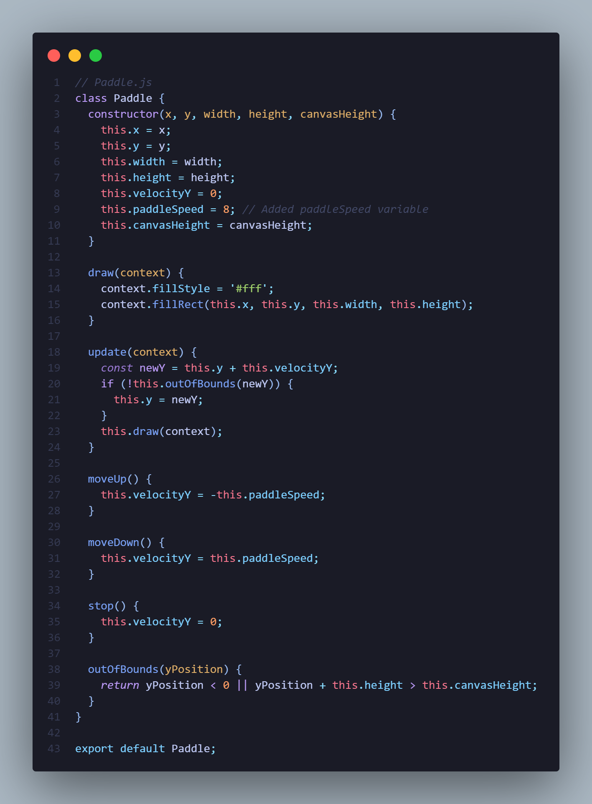

A simple classic inteegrated in with a eye pleasing website. This version of pong is a tribute to an age old classic, a one of a kind game created to insipire others to explore and create their own.
Ball.js contains the Ball class that represents a ball object in the game.
It has properties for position, radius, velocity, and canvas height. The update method updates the ball's position based on its velocity and handles bouncing off the canvas boundaries. The draw method is responsible for rendering the ball on the canvas. The createBall function generates a new Ball object with random properties.
paddle.js defines the Paddle class representing a paddle object in the game.
This has properties for position, dimensions, velocity, paddle speed, and canvas height. The draw method renders the paddle on the canvas, and the update method updates its position based on velocity. The class includes methods for controlling paddle movement and checking if it's out of bounds.
main.js serves as the entry point of the game. It imports the Paddle class and createBall function.
Constants WIDTH and HEIGHT define the canvas size. Instances of Paddle, score variables, and the ball object are created. The update function handles game state updates and rendering. Keyboard input is captured to control paddle movement. Additional functions handle ball reset, collision detection, and increasing ball speed. WIDTH and HEIGHT are exported for external use.
ツ 2023 WebPong - Made By BenC, DeepashS, SalmanK